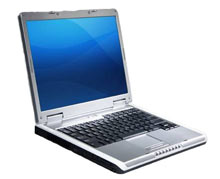

Connor Technology has the industry experience and tools required to give your company the highest quality IT support. Every situation is unique from new networks to warehouse inventory management. We provide customized and affordable solutions to your information technology needs. Everything from running cables to resetting lost passwords, we have the skills to provide the support that you need.
We can handle creating networks using either wired or wireless technology to provide easy, convenient and secure access thoughout your facility.
Providing a computer to your employees can be a time consuming and costly endeavour. We can take care of providing and maintaining computers that perform well and defend against virus and spyware infestations.
Manual Data entry is time consuming and prone to errors, costing you time and as a result, money. We have experience with integrating barcodes into all aspects of your operation.
RFID technology is the latest effort to improve accuracy and efficiencies in warehousing and shipping applications. We are one of a very few companies who have experience with these systems, as well as offering our own software and website integration.
Our standard service rates are as follows:
| Onsite Support & Consultation: | $100.00 CAD/Hr. |
| Offsite Technical Support: | $75.00 CAD/Hr. |